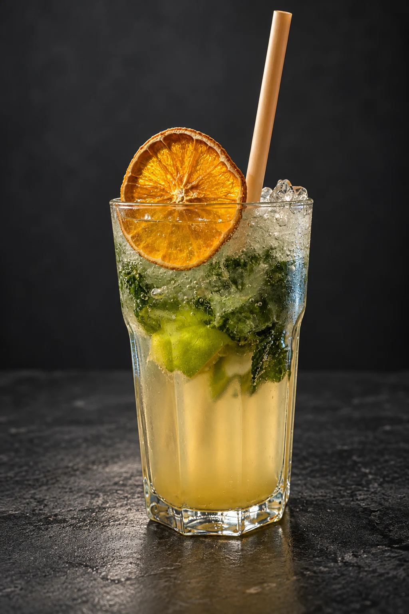
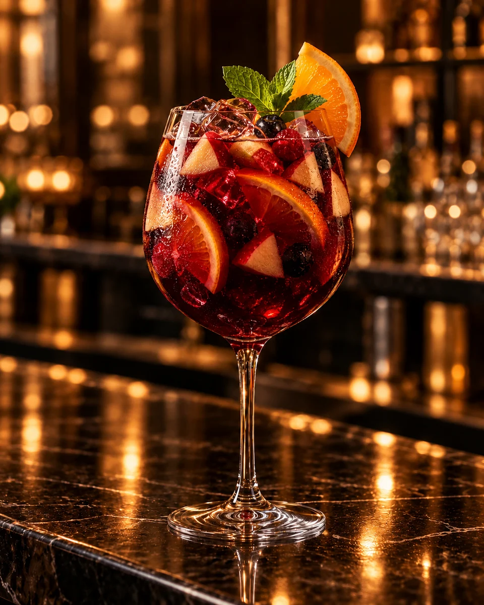
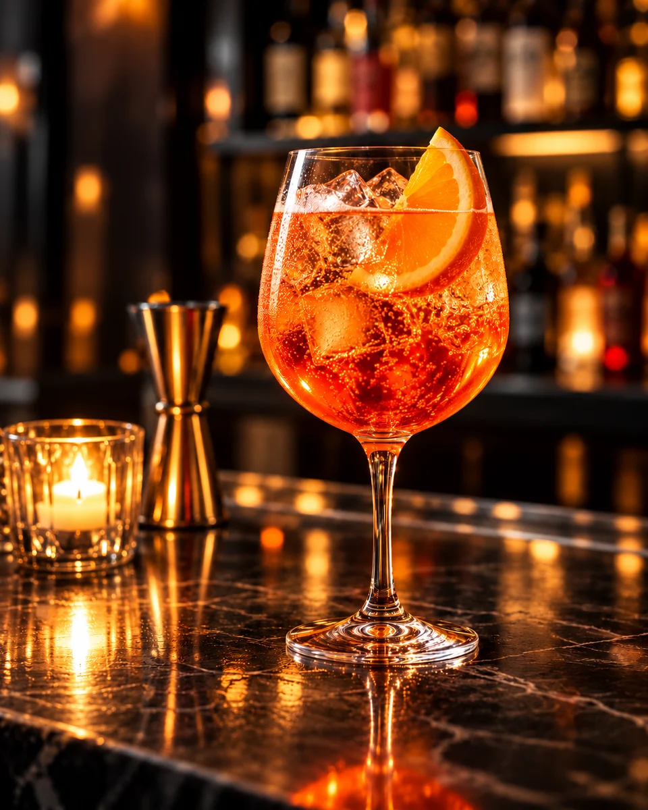
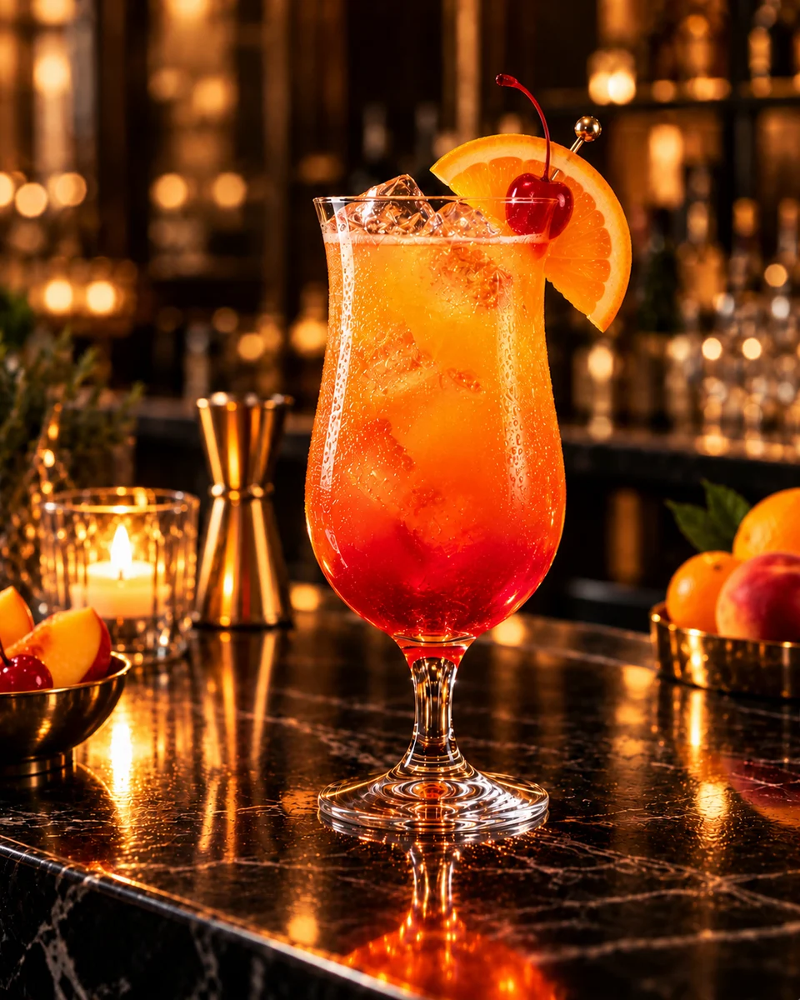

ИСКУССТВО ВЕЧЕРА
Красота.
В чистом виде.
От классики к своему вкусуТочные пропорции, понятные рецепты и сочетания, к которым хочется возвращаться.
Открыть каталогИСКУССТВО ВЕЧЕРА
От классики к своему вкусуТочные пропорции, понятные рецепты и сочетания, к которым хочется возвращаться.
Открыть каталогНе удалось загрузить фотографии. Проверьте подключение или перейдите к рецептам →
01 / ОТ ИДЕИ К ПОДАЧЕ
Выберите основу, характер и настроение напитка — подбор поможет быстро найти подходящий рецепт.
Проверьте точные пропорции и соберите всё необходимое заранее, чтобы ничего не отвлекало от процесса.
Следуйте наглядным шагам рецепта, отмечайте результат и сохраняйте удачные сочетания в избранное.
02 / РЕЦЕПТЫ, К КОТОРЫМ ВОЗВРАЩАЮТСЯ
 5 мин · Смешивание
5 мин · СмешиваниеДжин / Горький
Насыщенная итальянская классика: джин, красный вермут и горький аперитив в равных пропорциях.
 7 мин · Шейкер
7 мин · ШейкерТекила / Кисло-сладкий
Свежий лайм, текила и апельсиновый ликёр — яркое сочетание с солёным краем бокала.
 7 мин · Шейкер
7 мин · ШейкерВодка / Кисло-сладкий
Лаконичный коктейль с клюквой, цитрусовой свежестью и тонким апельсиновым ароматом.

7 мин · Сборка в бокалеРом / Освежающий
Классический мохито: белый ром, свежий лайм, мята и содовая с обилием колотого льда.
 5 мин · Сборка в бокале
5 мин · Сборка в бокалеВодка / Цитрусовый
Яркий голубой коктейль с цитрусовым вкусом, прохладной газировкой и выразительной апельсиновой нотой.
 6 мин · Сборка в бокале
6 мин · Сборка в бокалеВодка / Пряный
Пряная классика с томатным соком, лимоном и пикантными соусами — насыщенный вкус с мягкой крепостью.

8 мин · Сборка в бокалеКрасное вино / Фруктовый
Испанский винный пунш с апельсином, яблоком и ягодами — сочный, прохладный и созданный для компании.

5 мин · Сборка в бокалеПросекко / Горько-сладкий
Венецианский аперитив по формуле 3–2–1: просекко, Апероль и содовая с долькой апельсина.

6 мин · Сборка в бокалеВодка / Фруктовый
Яркий фруктовый лонг-дринк с персиком, апельсином и клюквой — сочный вкус и эффектный закатный градиент.
Тяните карточки мышью или пальцем
Видео не загрузилось — показан статичный кадр.
03 / НЕ ТОЛЬКО РЕЦЕПТЫ
Лёд падает в бокал, пока вы открываете характер напитков.
Можжевельник, ботаникалы и разница между основными стилями.
Читать САХАРНЫЙ ТРОСТНИКСырьё, выдержка и характер напитка, на котором строится мохито.
Читать ГОЛУБАЯ АГАВАКак производят текилу и чем отличаются её основные категории.
Читать ТИХИЕ И ИГРИСТЫЕСтили, характеристики и примеры производителей.
Читать
ХОРОШИЙ ВКУС НАЧИНАЕТСЯ С ЛЮБОПЫТСТВА
Мобильное приложение готовится к запуску
ИСКУССТВО ВЕЧЕРА
От классики к своему вкусуТочные пропорции, понятные рецепты и сочетания, к которым хочется возвращаться.
Открыть каталогНе удалось загрузить фотографии. Проверьте подключение или перейдите к рецептам →
01 / ОТ ИДЕИ К ПОДАЧЕ
Выберите основу, характер и настроение напитка — подбор поможет быстро найти подходящий рецепт.
Проверьте точные пропорции и соберите всё необходимое заранее, чтобы ничего не отвлекало от процесса.
Следуйте наглядным шагам рецепта, отмечайте результат и сохраняйте удачные сочетания в избранное.
02 / РЕЦЕПТЫ, К КОТОРЫМ ВОЗВРАЩАЮТСЯ
5 мин · СмешиваниеДжин / Горький
Насыщенная итальянская классика: джин, красный вермут и горький аперитив в равных пропорциях.
7 мин · ШейкерТекила / Кисло-сладкий
Свежий лайм, текила и апельсиновый ликёр — яркое сочетание с солёным краем бокала.
7 мин · ШейкерВодка / Кисло-сладкий
Лаконичный коктейль с клюквой, цитрусовой свежестью и тонким апельсиновым ароматом.
Ром / Освежающий
Классический мохито: белый ром, свежий лайм, мята и содовая с обилием колотого льда.
5 мин · Сборка в бокалеВодка / Цитрусовый
Яркий голубой коктейль с цитрусовым вкусом, прохладной газировкой и выразительной апельсиновой нотой.
6 мин · Сборка в бокалеВодка / Пряный
Пряная классика с томатным соком, лимоном и пикантными соусами — насыщенный вкус с мягкой крепостью.
Красное вино / Фруктовый
Испанский винный пунш с апельсином, яблоком и ягодами — сочный, прохладный и созданный для компании.
Просекко / Горько-сладкий
Венецианский аперитив по формуле 3–2–1: просекко, Апероль и содовая с долькой апельсина.
Водка / Фруктовый
Яркий фруктовый лонг-дринк с персиком, апельсином и клюквой — сочный вкус и эффектный закатный градиент.
Тяните карточки мышью или пальцем
Видео не загрузилось — показан статичный кадр.
03 / НЕ ТОЛЬКО РЕЦЕПТЫ
Лёд падает в бокал, пока вы открываете характер напитков.
Можжевельник, ботаникалы и разница между основными стилями.
Читать САХАРНЫЙ ТРОСТНИКСырьё, выдержка и характер напитка, на котором строится мохито.
Читать ГОЛУБАЯ АГАВАКак производят текилу и чем отличаются её основные категории.
Читать ТИХИЕ И ИГРИСТЫЕСтили, характеристики и примеры производителей.
Читать04 / ОТ ИДЕИ К ХОРОШЕМУ ВЕЧЕРУ
Все инструменты доступны после регистрации.
Войдите, чтобы собирать свою коллекцию рецептов.
Укажите ингредиенты и количество — мы покажем, что можно приготовить прямо сейчас.
Открыть 02Выберите основу, характер и тип напитка, чтобы получить персональную подборку.
Открыть 03Сопоставьте рецепты по ингредиентам, сложности, времени и расчётной крепости.
Открыть 04Добавьте коктейли и количество гостей — ингредиенты сложатся в общий список покупок.
Открыть 05Создавайте собственные рецепты, сохраняйте точные пропорции и собирайте личную коллекцию.
ОткрытьХОРОШИЙ ВКУС НАЧИНАЕТСЯ С ЛЮБОПЫТСТВА